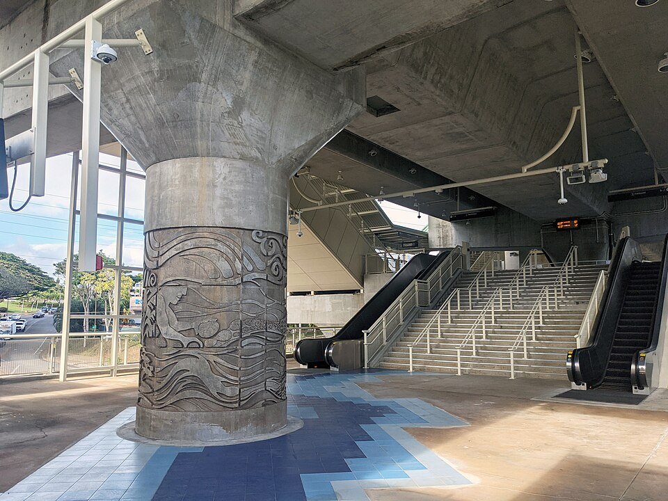

Waiawa Rail Station
Place: Waiawa Rail Station, Pearl Highlands, Pearl City, Oʻahu
Type: Skyline rail station / transit hub
Namesake: Waiawa (“milkfish water”), the traditional ahupuaʻa and stream flowing into Puʻuloa, or Pearl Harbor
Story it tells: How a modern rail station preserves the name of a landscape once shaped by Waiawa Stream, loʻi kalo, and productive fishponds before sugar cultivation, military development, highways, and suburban growth transformed the area.

Waiawa Rail Station, also known as Pearl Highlands Station, stands along Kamehameha Highway in Pearl City near the junction of the H-1 and H-2 freeways. The elevated station opened on June 30, 2023, as part of Skyline's first operating segment and was intended to serve as an important connection between the rail system and communities across Central Oʻahu.
Waiawa means “milkfish water,” combining wai, or fresh water, with awa, the Hawaiian name for milkfish. The name is associated with Waiawa Stream and the surrounding ahupuaʻa, which extended from the Koʻolau Mountains toward the waters of Puʻuloa, or Pearl Harbor. Waiawa Stream drains one of Oʻahu's largest watersheds, carrying freshwater from the mountains into the broad estuarine environment below.
Where that freshwater met the saltwater of Puʻuloa, a rich, brackish habitat for awa developed. Loʻi kalo lined portions of the stream and surrounding wetlands, while loko iʻa (fishponds) along the lower reaches, near the present rail station, captured and raised fish moving between the harbor and protected waters.
Milkfish were particularly well suited to this environment. Young awa could enter productive brackish ponds and feed within the protected waters of the pond. As the fish grew, carefully constructed mākāhā, or sluice gates, allowed pond keepers to control their movement and harvest as needed. The abundance of awa in these waters became important enough to survive in the name Waiawa itself.
Families cultivated kalo and other crops along the stream while gathering resources from the uplands and harvesting fish and shellfish closer to Puʻuloa. Water connected these different environments, flowing from the mountains through agricultural lands and eventually into the fishponds and ocean.
During the mid to late nineteenth century, this landscape began to change. Commercial agriculture spread throughout Central Oʻahu, and sugar eventually became the dominant industry surrounding Waiawa. The Oahu Sugar Company leased land from Bishop Estate and cultivated the Waiawa region, replacing much of the earlier agricultural landscape with cane fields, plantation irrigation systems, roads, and railways. Water that had supported loʻi, wetlands, and fishponds was redirected to industrial agriculture.
The transformation continued during the twentieth century, but looked different. Military development around Puʻuloa, suburban growth in Pearl City, new highways, commercial centers, and other infrastructure gradually replaced the plantation landscape. After Oahu Sugar Company closed in 1995, former cane lands surrounding Waiawa entered another period of transition as agriculture gave way to commercial and residential development.
One remnant of the plantation transportation network survives immediately below the modern station. The Oahu Railway & Land Company's railroad once passed through the Waiawa corridor, carrying agricultural products and passengers between Honolulu and communities across western Oʻahu. Portions of that former railroad corridor later became the Pearl Harbor Historic Trail. More than a century later, an automated electric railway again carries passengers through Waiawa, creating an unusual overlap between two generations of Oʻahu transportation.
The modern station was originally envisioned as an even larger transportation hub. Plans for Pearl Highlands included a roughly 1,600-stall park-and-ride garage and direct connections intended to support ridership from Mililani, Wahiawā, and the North Shore. Rising construction costs pushed the proposed garage and freeway connections outside the rail project's reduced construction scope.
Instead, the station functions primarily through rail, bus, bicycle, and pedestrian connections while serving the surrounding Pearl City area. Pearl Highlands Center and other commercial development now occupy portions of a landscape once dominated by agriculture, wetlands, and transportation corridors.
Despite those changes, pieces of Waiawa's older agricultural identity are being revived nearby. Community organizations have worked to restore loʻi, native plants, and ʻāina-based education within the lower Waiawa corridor, returning traditional cultivation to small portions of a watershed altered by plantation agriculture and urban development.
The history represented by the station's name is also built directly into its architecture. Low-relief columns designed by architect Daniel Kanekuni of WCIT Architecture tell Waiawa's story in the masonry. Images of mountain rains and the Koʻolau watershed descend toward agricultural lands, fishponds, waves, and schools of awa. The station entrance turns the meaning of “milkfish water” into a visual narrative, connecting the modern structure with the environment that used to support this community and produced its name.
Today, Waiawa Stream continues flowing through the valley toward Puʻuloa. It was redirected, polluted, and survived many iterations of the surrounding landscape. It persists.
Waiawa preserves the memory of that relationship between fresh water and sea: the stream, loʻi, fishponds, and abundant awa that once made “milkfish water” an obvious name for this place. The modern station places that name back into daily use, allowing thousands of passengers to encounter a fragment of history every time they ride Skyline.